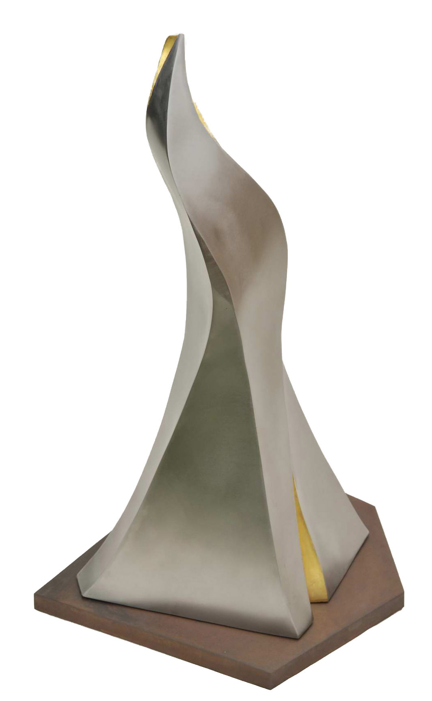

Spirit Uplifting
Stainless steel and gold leaf; corten steel base · 18″ × 18.5″ × 32.5″ · 2011
In a private collection.
The Language of Sculpture, Lake Oswego Festival of the Arts, 2011 · Sculptural Conversations, Bush Barn Art Center, Salem, Oregon, 2012

More views
{kind=link}
{kind=link}
{kind=link}
{kind=link}
{kind=link}
Spirit Uplifting grew out of a series of works exploring the sweeping, twisting lines of stylized flame. As the piece developed it became more abstracted from that starting idea — a form more grounded than fire, yet similarly ethereal.
The sculpture was first worked in clay. From that maquette, patterns were traced, enlarged, and cut from stainless-steel — my first piece in that material. The form had to be worked up from the base on all sides at once, each plane drawn gracefully in to its neighbor with tremendous force for fit-up, tacking, and final TIG welding, all while managing the heat distortion that stainless invites. The inside corners could not be welded and cleaned afterward, so they were hammered from wedges and finished in gold leaf. They draw attention to the interior of the form — the spirit emerging from within.
The double-stacked, rotating base is corten steel, chosen for the beauty of its patina and the contrast of that warmth against the cool tones of the stainless form.